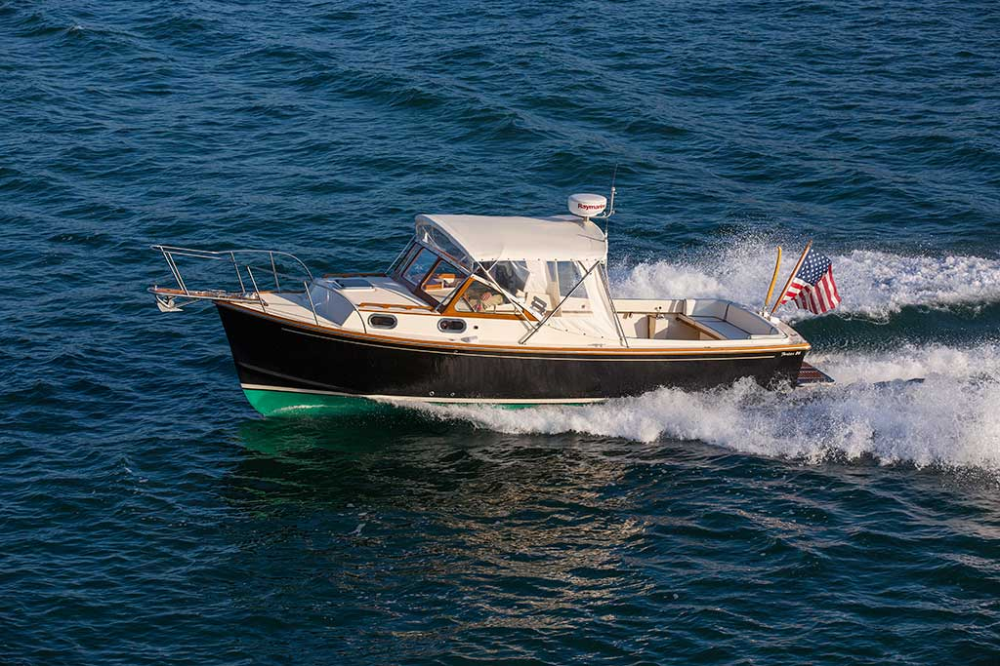

B-Atlas Boat Guide · FORT-26
Fortier 26 Bass Boat / Downeast Cruiser
From 1978
The Fortier 26 is a New England Downeast/bass-boat cruiser based on Eldridge-McInnis design principles, with a molded keel, low profile and diesel inboard propulsion. Fortier emphasizes robust construction, fishing utility and efficient coastal performance rather than maximum interior volume.

- Length
- 26.9 ft
- Beam
- 10 ft
- Draft
- 2.5 ft
- Hull behaviour
- Semi-Displacement
- Fuel
- Diesel
- Propulsion
- Shaft
- Engine configuration
- Single diesel inboard
- Boat family
- Downeast
- Construction
- Fiberglass
Best for
- Coastal cruisers who value cockpit space and classic New England design
- Fishing/cruising owners wanting conventional inboard machinery
- Buyers prioritizing build quality over maximum interior volume
Trade-offs
- Lower cabin volume than taller production cruisers of similar length
- Traditional low-profile layout prioritizes cockpit and seakeeping over multiple private cabins
- Customization means equipment still varies between individual boats
Known concerns
- No model-specific concern has been promoted to B-Atlas’s evidence threshold. This does not mean the model has no age-, condition- or hull-specific risks.
Inspection focus
- Inspect foam-cored hull/deck around penetrations and hardware
- Inspect engine room, exhaust, cooling, shaft and rudder systems
- Verify custom options and later modifications
- Inspect cockpit sole, scuppers and deck drainage
- Confirm actual tankage and machinery package
Continue researching
Related boat models
Fortier 33 Downeast Cruiser
33.5 ft · Semi-Displacement
Back Cove 26 Downeast Cruiser
26.5 ft · Semi-Displacement
Atlantic Boat 26 Downeast / Lobsterboat Hull
26 ft · Semi-Displacement
Sisu 26 Bass Boat / Sedan / Lobsterboat
25.92 ft · Semi-Displacement
Cape Dory 28 Open Fisherman Open Fisherman
27.92 ft · Semi-Displacement
Seaway 28 Coastal Cruiser Coastal Cruiser
28 ft · Semi-Displacement
About this record
B-Atlas preserves uncertainty: missing information remains unknown rather than being treated as a negative. Specifications and guidance describe the model record; individual boats can differ by year, equipment, refit and condition.